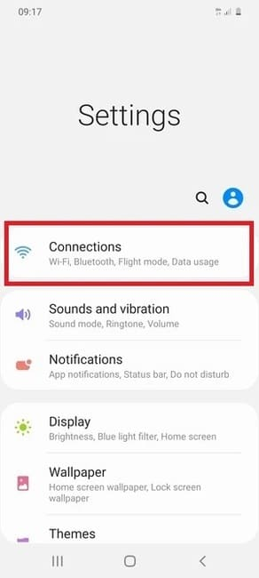
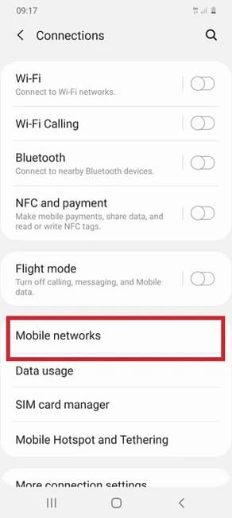
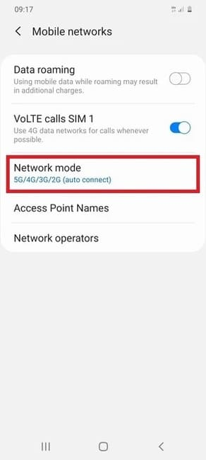
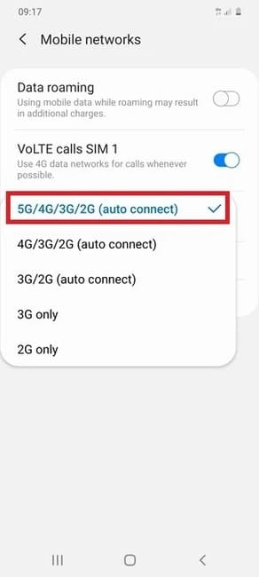
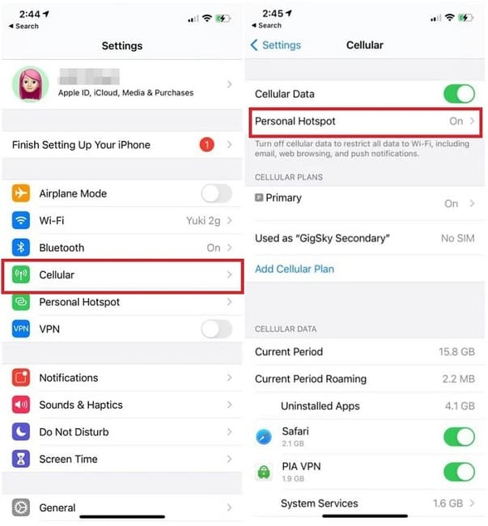
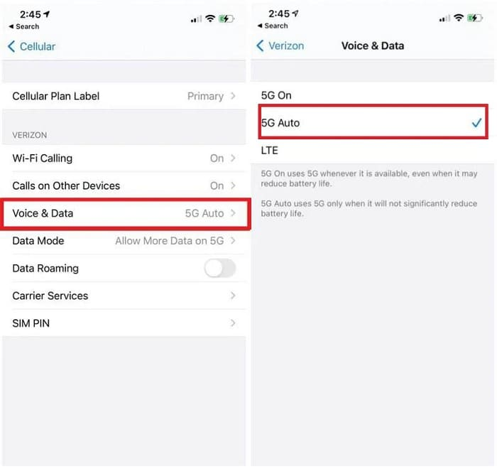

Cách kiểm tra điện thoại có hỗ trợ 5G hay không 2024
Lợi ích của công nghệ 5G
5G, viết tắt của “thế hệ thứ năm” (5th Generation), là bước tiến mới nhất trong công nghệ mạng di động, vượt trội hơn hẳn so với 4G trước đó. Được phát triển để cải thiện đáng kể tốc độ và độ phản hồi của các mạng không dây, 5G hứa hẹn sẽ thúc đẩy tốc độ download và trải nghiệm truyền dữ liệu không giật lag, cùng với nhiều lợi ích khác.

Hướng dẫn kiểm tra điện thoại có hỗ trợ 5G hay không
Cách kiểm tra hỗ trợ 5G trên Android
Đối với điện thoại Android:
Bước 1: Vào Cài đặt > Kết nối (Setting > Connections).
Bước 2: Chọn Các mạng di động (Mobile networks).
Bước 3: Tìm đến Chế độ mạng (Network mode).
Bước 4: Bạn hãy kiểm tra xem điện thoại có hiện ra 5G hay không. Nếu có thì thiết bị di động này có khả năng kết nối với mạng 5G. Nếu không, thiết bị chỉ có thể kết nối với mạng 4G/3G và 2GB.
Cách kiểm tra hỗ trợ 5G trên iOS
Apple đã gia nhập cuộc đua 5G với việc giới thiệu dòng iPhone 12. Bốn mẫu điện thoại – iPhone 12 mini, iPhone 12, iPhone 12 Pro và iPhone 12 Pro Max – tất cả đều tương thích với 5G, trong khi các phiên bản iPhone trước đó không có tính năng này.
Tuy nhiên, bạn vẫn có thể kiểm tra xem điện thoại của mình có hỗ trợ 5G hay không bằng cách làm theo các bước sau. Đây cũng là cách để bật kết nối 5G trên iPhone 12:
Bước 1: Mở ‘Cài đặt’ > ‘Di động’ > và chọn ‘Tùy chọn dữ liệu di động’ (Settings -> Cellular -> Personal Hotspot).
Mở ‘Cài đặt’ > ‘Di động’ > Chọn ‘Tùy chọn dữ liệu di động’
Bước 2: Chọn tiếp “Thoại & dữ liệu (Voice & Data)”. Tại mục này, bạn sẽ thấy các loại kết nối mà điện thoại hỗ trợ. Nếu chỉ thấy LTE và 3G, tức điện thoại của bạn không hỗ trợ 5G. Nếu có các tùy chọn như LTE, 5G Auto, 5G On, điện thoại của bạn có hỗ trợ 5G. Bạn nên chọn 5G Auto để tiết kiệm pin hơn nhé.
Cách kiểm tra điện thoại hỗ trợ 5G online
Để xác định khả năng tương thích 5G của điện thoại, bạn có thể kiểm tra trực tuyến tại trang web của những nhà sản xuất điện thoại như Samsung, OPPO, và Apple. Chỉ cần lựa chọn mẫu điện thoại và kiểm tra phần thông số kỹ thuật để biết liệu thiết bị có khả năng kết nối với mạng 5G hay không.
Lời Kết
Như vậy, việc kiểm tra điện thoại có hỗ trợ 5G hay không không chỉ giúp bạn nắm bắt được công nghệ tiên tiến mà còn đảm bảo bạn luôn kết nối mọi lúc, mọi nơi. Hãy theo dõi các bước đơn giản trên để biết thêm thông tin và tận hưởng trải nghiệm 5G mượt mà nhé!